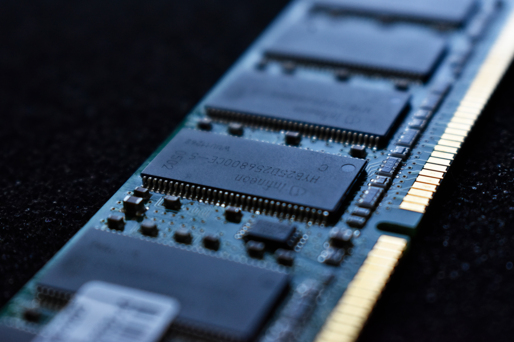

Ram는 사용자가 자유롭게 내용을 읽고 쓰고 지울 수 있는 기억장치. 컴퓨터가 켜지는 순간부터 CPU는 연산을 하고 동작에 필요한 모든 내용이 전원이 유지되는 내내 이 기억장치에 저장된다. 
ROM과 함께 컴퓨터의 주 기억 장치로, 롬과는 달리 자유롭게 읽고 쓸 수 있다는 특징을 기억해야 한다. 컴퓨터는 CPU에서 이뤄진 연산을 메모리에 기록하며 또 읽어온다. 잘 이해가 되지 않는다면, 복잡한 계산을 할 때 공책에 풀이해 가면서 하는 걸 생각하면 된다. 즉, 메모리가 없으면 컴퓨터는 동작하지 못한다. 당연히 램의 용량이 클수록 그 용량만큼 동시에 기록하고 연산하는 것이 가능하다는 것이며 고용량 램일수록 컴퓨터의 성능이 올라가고 가격이 비싸진다.
RAM에서 말하는 Random Access(임의접근, 任意接近)란 임의의 주소가 주어질 때 똑같은 시간으로 접근이 가능하다는 의미로서, 무작위가 아니다. 이는 메모리의 주소만 알고 그곳을 지정하면(아무데다가 쳐박아도 위치만 알면 찾아낼수 있다는 의미이다.) 별다른 지연 없이 바로 접근할 수 있다는 뜻으로, CPU에서 먼 쪽의 슬롯에 있다거나 하는 물리적 특성에 따라 접근 시간이 더 걸리는 경우가 있지만 이것은 seek time적 의미이다. 사실 교조적으로 무조건 따지면 억지이다. 메모리도 NUMA가 나오는 마당에...(특히 쓰레드리퍼 2세대가 이로 인한 성능 최적화 문제가 큰 편이다.) 사실 교조적으로 '똑같은 시간'을 고집하면 L3 캐시도 RAM이 못 된다[6] 그보다는 실용적 측면에서 주기억장치로 쓸 만한 랜덤 액세스 성능이 나오느냐로 나누는 것에 가깝다. 임의 지점 액세스 자체는 가능하지만 성능 차이가 커서 RAM으로 인정하지 않는 물건으로는 DVD, HDD가 있으며[7], 임의 지점 액세스 자체가 불가능한 저장 매체로는 자기테이프가 있다. 이런 매체는 차례차례 접근하는 순차 접근(Sequential Access)밖에 되지 않는다.